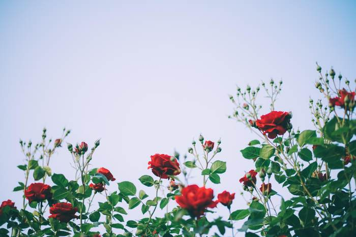
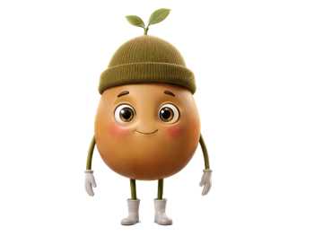

Pip is looking here
This stem may be dead. It looks darker than the growth beside it, and I can't see a healthy bud in the photograph. Can you find the same stem on the rose and look at it closely?
What would you like to do?